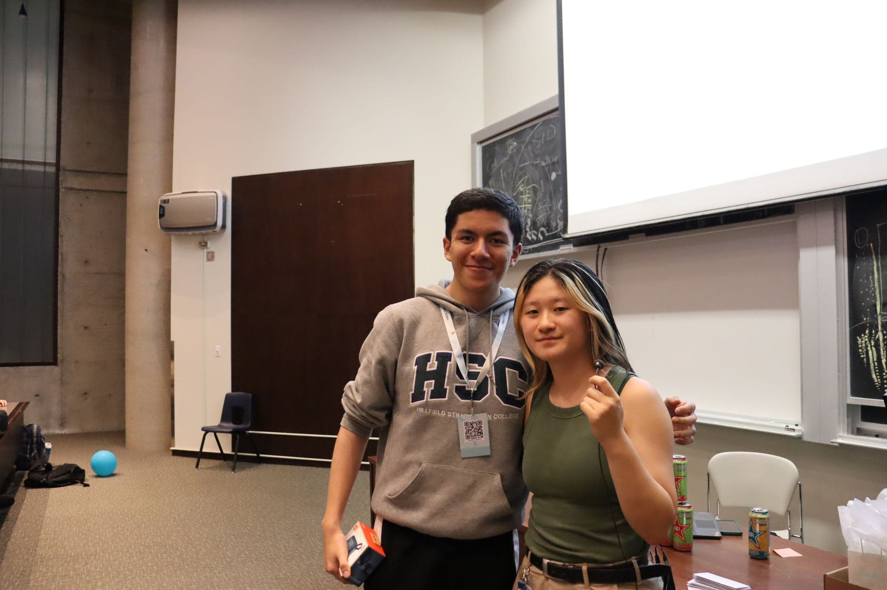

Pocket Prosthetic.
Democratizing Prosthetics.
While working at Holland Bloorview, I learned about the prosthetic creation process. One of the most painstaking parts of this process was creating the mould or 3D representation of the residual limb. There were two key methods they went about doing this:
- Fitting plaster around the patient's residual limbs: This is a painstakingly long process and can be uncomfortable for the patient as it requires them to sit still for extended periods, which can be difficult for young patients and those with mental disabilities. Furthermore, the effectiveness of this method is dependent on the skill and precision of the moulder.
- 3D scanning: While an improvement over the previous method, the IR/LiDAR scanners used for this process are expensive and hard to come by at a local hospital. Furthermore, many sensors flash lights at the patient which can be life-threatening for epileptic patients.
That's where Pocket Prosthetic comes in. My solution makes use of the LiDAR sensor available on most iPhones today. This app allows patients to submit LiDAR scans, images, and other necessary information defined by the clinic for their patient about their residual limb and prosthetic requirements directly from their phones. This data is sent to the clinic for prosthetic generation. This approach significantly reduces the need for frequent clinic visits, making the process more accessible and convenient for patients, especially those who live far from medical facilities.
The app was developed using Swift for iOS, leveraging the LiDAR capabilities of modern iPhones to capture precise 3D models of the residual limb. The TypeScript backend is designed to handle the upload and processing of these scans, ensuring they are available to prosthetists for review and prosthetic design. The backend is hosted on AWS, and all data is stored on S3 and MySQL.
The app was one of the winning projects at Hack the 6ix, Toronto's biggest hackathon.
